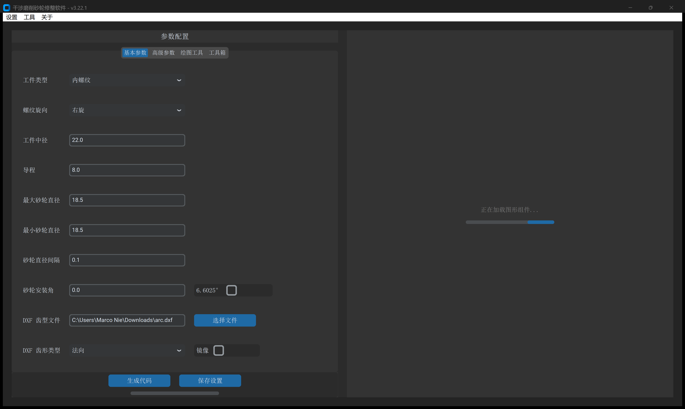
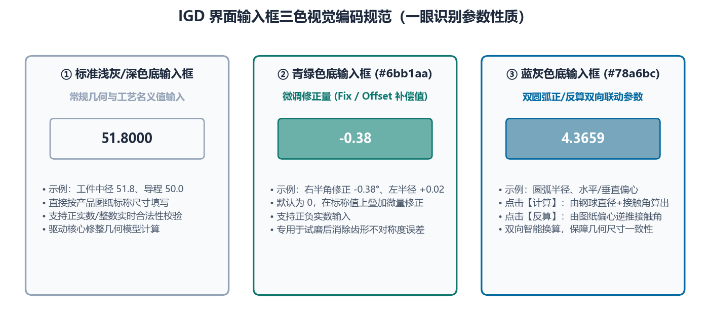

1.2 主界面布局、三色输入框与画布操作
成功进入 IGD 主窗口后，软件采用工业 CAE 软件经典的“左参数控制面板 + 右交互式绘图画布”双栏分屏架构。理解界面分区与输入框三色视觉编码规范是高效操作本软件的基础。
一、主界面五大功能分区

如上图所示，主窗口由五大核心区域构成：
- ① 顶部系统菜单栏
设置：支持实时切换界面语言（中文/English，无需重启）、执行检查更新以及查看版本更新日志；工具：打开零件库管理窗口，支持将常用工件的完整参数与 DXF 齿形一键归档或回填；关于：提供官方网站、用户手册与关于我们入口。
- ② 左侧四大核心工作台标签页
基本参数：日常磨削修整计算最核心的输入面板，定义工件螺旋参数、导入DXF 齿型文件并设置砂轮直径/杆偏移范围与安装角；高级参数：分为初始化配置（滚轮半径、点密度、延长高度、圆弧拟合、特殊工艺开关）与程序信息（13 种数控系统程序模式与修整轴定义）；绘图工具：内置参数化标准齿形生成器，涵盖螺纹（三角/梯形/双圆弧）、XY 点位文件、齿轮（渐开线）与蜗杆（7 种包络蜗杆），底部操作按钮为生成齿形文件；工具箱：集成 6 大工程辅助与仿真校验工具（最大偏移、滚道曲线计算、DXF 处理、曲线转换、曲线误差对比、车刀计算）。
- ③ 左下角主操作与授权状态区
- 当处于
基本参数或高级参数标签页时，底部主按钮显示为生成代码（快捷键或鼠标点击触发空间包络修整计算）； - 当切换至
绘图工具或工具箱各子标签页时，底部主按钮会自动切换为对应模块的专属执行按钮（如生成齿形文件、生成工件截面曲线、生成车刀数据等）； - 最下方状态栏实时显示当前加密狗或授权激活状态（如
🟢 加密狗授权已激活）。
- 当处于
- ④ 右侧交互式绘图画布（Matplotlib 工具栏 + 主绘图区）
- 顶部集成标准图形交互工具栏（复位视图、回退/前进、平移拖曳、框选局部放大、保存高清图片），鼠标在画布内移动时右上角实时显示当前十字光标的精确物理坐标 （单位： 或 ）。
- ⑤ 右下角多视图切换栏
- 在执行
生成代码后，右下角提供 6 个核心计算结果视图按钮：加载图形、间隔变化、圆弧拟合、干涉齿形、修形轮廓、模拟计算； - 当在
工具箱中执行滚道曲线计算或曲线误差对比时，该区域还会动态浮现紫色的误差曲线专属分析按钮。
- 在执行
二、输入框三色视觉编码规范（核心交互约定）
在 基本参数、绘图工具 与 工具箱 的眾多参数行中，您会看到三种不同背景颜色的输入框。这是 IGD 专为“理论标准值 + 现场工艺微调补偿”设计的视觉编码体系：

| 输入框背景色 | 色值标识 | 属性定位 | 工程含义与操作规范 |
|---|---|---|---|
| 标准白色底框 | #FFFFFF（深色模式下为标准底色） |
基础设计输入项 | 根据产品加工图纸或机床刀具规格必填的公称几何参数（如 工件中径、导程、最大砂轮直径、滚轮圆弧半径 等）。 |
| 青绿色底框 | #6bb1aa |
公差微调 / 偏置补偿项 | 紧跟在基础参数右侧的增量修正框（默认值为 0）。用于在不破坏图纸公称参数的前提下，输入现场试磨后的角度微调量、直径磨损补偿量或变位修正量。叠加法则：。 |
| 蓝灰色底框 | #78a6bc |
正向自动计算结果 / 逆向反算输入项 | 专用于 绘图工具 -> 螺纹 -> 双圆弧 面板中的圆弧半径与水平/垂直偏心参数：• 点击 计算 时：系统由 计算系数、钢球直径、接触角 自动推算这 6 个参数并填入蓝灰色框；• 点击 反算 时：允许工程师直接在蓝灰色框内填入图纸给定的圆弧半径与偏心值，逆向解算接触角与圆弧过渡。 |
现场调机最佳实践：例如在
绘图工具 -> 螺纹 -> 梯形中，图纸要求半角为 ，但三坐标实测磨出的螺纹牙型半角偏小 。此时切勿修改左侧白底框中的15，而应在右侧#6bb1aa青绿色修正框中输入0.05（或-0.05）。这样既保留了图纸原始基准15，又清晰记录了本次修整的工艺补偿量。
三、右侧绘图画布快捷操作指南
右侧画布支持亚微米级局部细节放大审阅（例如放大到 级别检查齿根倒圆过渡或双圆弧交点 处的台阶差）：
- 框选放大（Zoom）：点击画布顶部工具栏的 放大镜图标，在画布上按住鼠标左键拖拽拉出矩形框，即可将齿顶、齿根或圆弧拟合段放大至微米级视野；
- 自由平移（Pan）：点击 十字箭头图标，按住鼠标左键拖动可平移视图；按住鼠标右键拖动可按比例缩放坐标轴；
- 一键复位（Home）：点击最左侧 房屋图标，立即恢复全景自适应比例视图；
- 高分辨率截图保存（Save）：点击 软盘图标，可将当前画布视图导出为高分辨率
.png、.svg或.pdf矢量图，用于编制车间工艺卡。